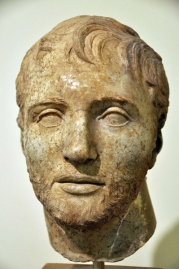

|
Hannibal Barcané en 247 av. J.-C. à Carthage et mort entre 183 av. J.-C. et 181 av. J.-C. en Bithynie, est un général et homme politique carthaginois, généralement considéré comme l'un des plus grands tacticiens militaires de l'Antiquité. |
|  |
Caius Flaminius NepoCaius Flaminius Nepos (mort en 217 av. J.-C.) est un homme politique et militaire romain, d'origine plébéienne il gravit le Cursus Honnorum jusqu'à commander les armées de Rome. |
Contexte de la bataille
Nous sommes en -216, la deuxième Guerre Punique fait rage entre les deux superpuissances de la Méditerranée qui se disputent son contrôle. Nommé à la tête de l’armée carthaginoise en 219 av.JC, Hannibal Barca conquiert rapidement l’Espagne, remonte vers le sud de la Gaule, traverse les Alpes et arrive en Italie. Dès 218 av. JC, l’armée carthaginoise qui a progressé rapidement, remporte ses premières victoires face aux légions romaines au Tessin et à la Trébie, dans le Nord de l’Italie.
Face à l’avancée des Carthaginois, Rome souhaite regrouper deux armées afin de stopper cette avancée victorieuse qui se rapproche dangereusement de la capitale de l’Empire. L’objectif de Rome étant de remporter une bataille décisive, l’ordre est donné aux commandants en charge de ces deux armées : le Consul Caïus Flaminius Nepo et le Consul Cnaeus Servilius Geminus, de progresser rapidement pour se rejoindre et faire face, ensemble, au général carthaginois, afin de marquer un coup d’arrêt définitif à son avancée rapide.
Hannibal Barca, en campagne depuis deux ans, dirige une armée expérimentée et se sait talonné par l’armée de Flaminius. Il décide de fixer son armée sur les bords du lac de Trasimene, afin de se débarrasser de son poursuivant avant la jonction des deux armées romaines.
Forces en présence
Hannibal Barca est à la tête d’une armée de 30 à 40.000 fantassins et de 10.000 cavaliers.
Dans ses rangs sont présents des fantassins et cavaliers gaulois, dont il est souvent précisé le manque d’obéissance, des Numides dont la cavalerie est réputée pour ses qualités en combat d’escarmouche, des Ibères, des Baléares et des Carthaginois.
L’ensemble de cette armée est complété par les redoutables légions africaines.
De son côté le Consul Caïus Flaminius Nepo dispose de 22.000 fantassins et de 3000 à 3500 cavaliers romains et alliés. L’armée de renfort du second Consul Cnaeus Servilius Geminus est encore trop éloignée et ne peut opérer la jonction avant plusieurs jours.
L'analyse parfaite du terrain par Hannibal
Dans un premier temps, l’armée carthaginoise, qui se sait poursuivie, atteint son objectif en arrivant très vite sur les berges du lac de Trasimene.
L'armée s’engage alors dans le défilé de Borghetto sur une berge étroite entre le lac et les collines en surplomb.
La configuration topographique de la passe est idéale pour une embuscade. S’allongeant sur un maximum d’une dizaine de kilomètres, l’entrée ainsi que l’extrémité de la passe sont étroites. Au centre, les collines en pente douce sont constituées de forêts de chênes, idéales pour se cacher.
Hannibal connaît parfaitement la configuration du terrain sur lequel il s’engage et dispose d’emblée son armée en quatre corps distincts sur la totalité de la passe.
Flaminius connaît la topographie, il pense d’ailleurs, sur ce point, avoir l’avantage. Même impétueux, il n’est pas sans connaître le risque que peut présenter le passage de son armée dans le défilé de Borghetto. Lorsqu’il arrive à l’entrée de la passe, Flaminius sait que l’armée carthaginoise s’y est engagée. Il est tard le soir et il décide d’installer son campement.
Hannibal a gagné son premier pari d’attirer l’ennemi sur le terrain qu’il a choisi. Il a déjà disposé ses troupes sur les collines et l’embuscade est en place.
Une fois le dispositif carthaginois fixé, dans un silence absolu, et son camp discrètement établi aux environs du défilé de Borghetto, Hannibal décide de tromper le général romain.
Il envoie des troupes non combattantes munies de milliers de torches très au-delà du camp, sur les collines éloignées, afin de créer l’illusion d 'éloignement. La passe donne ainsi l’apparence d’avoir été largement franchie par les Carthaginois, et d’être libérée de tout danger.
La météorologie est favorable.
Les abords du lac sont recouverts d’une épaisse nappe de brouillard bas qui n’atteint pas les collines en surplomb. Lorsque l’arrière-garde romaine termine de s’engager dans la passe, l’armée carthaginoise déclenche trois actions simultanées :
la cavalerie de réserve ferme l’entrée de la passe ; les troupes gauloises repoussent brutalement les légionnaires vers le lac ; les Baléares et Carthaginois s’abattent sur le convoi pour le diviser, isolant ainsi l’avant-garde romaine constituée d’environ 6.000 hommes.
Sur l’avant du convoi romain les Ibères et les légions africaines forment un dispositif d’arrêt, tandis que sur le milieu et l’arrière de la colonne romaine, c’est un véritable carnage. La surprise est totale. La rive réduite rend impossible toute manœuvre de l’armée romaine et l’empêche de prendre ses dispositions habituelles de combat.
Les légionnaires romains sont tués sur place ou propulsés vers le lac, dans lequel beaucoup se noient en raison du poids de leur équipement. Ceux qui ne meurent pas sont achevés dans l’eau par les cavaliers.
Bilan
Les pertes romaines sont colossales. Sur les 25.000 hommes de l’armée de Flaminius, 15.000 sont morts et 10.000 sont prisonniers. Le Consul Flaminius est tué durant les combats.
L’armée du Consul Servilius est quant à elle extrêmement affaiblie par la perte de 4.000 cavaliers envoyés au secours de l'armée de Flaminius et n’est plus capable de stopper la progression carthaginoise.
Du côté carthaginois les pertes sont réduites à environ 2.000 hommes, principalement des Gaulois.
On évoque généralement deux raisons principales à la sur-mortalité des Gaulois : leur manque de discipline et le peu d’intérêt qu’Hannibal Barca leur portait.
La nouvelle de cette défaite arrive rapidement à Rome. Même si aucun détail n’est donné à la population romaine, la nouvelle de la mort du Consul Flaminius et de l’extermination de son armée surprend et sème un doute sur la capacité de la République à protéger sa capitale.
Cette défaite romaine marque la prise de possession de l’Etrurie par l’armée carthaginoise.
La route de Rome est ouverte.
Conclusion
La bataille de Trasimene est intéressante stratégiquement à deux niveaux.
Tout d’abord Hannibal démontre, une fois de plus, la justesse de sa vision globale de la conduite de la guerre. Les batailles sont des moments clés dans un schéma d’ensemble où aucun élément n’est laissé au hasard.
La progression est guidée par une gestion rigoureuse du temps, dans laquelle se présentent de nécessaires accélérations contrôlées. Le général carthaginois se met toujours en situation de choisir le lieu des combats.
La bataille de Trasimene est, ensuite, un exemple parfait d’embuscade. La tactique n’est pas nouvelle, mais Hannibal excelle de la conception à la conduite de la manoeuvre. Cette embuscade démontre parfaitement la maîtrise du terrain et de sa configuration, une parfaite connaissance de l’ennemi, de son organisation et de ses déplacements, et, l’aménagement d’un fort effet de surprise.